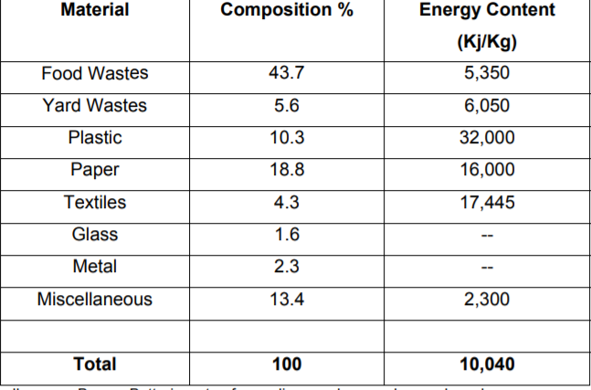

![]()
![]()
1.40%-60% compostible waste
2.30%-50% inert waste
3. 10%-30% recyclable waste
Out of all this waste collected, only 12.45% is scientifically processed and the rest is all dumped.1.40%-60% compostible waste

In India, waste is not seperated or sorted by those who produce this waste but by the unorganised sector. This seperation is done in an unsafe environment and the effectiveness is reasonably low. Several times, the contents of this segregation are mixed during transportation. The main meduim of this transportation are compactors, bullock carts, trailers, hand rickshaws, trucks, tractor and dumpers.1.40%-60% compostible waste
The dumping of waste is usually done on low-lying unsanitary areas usually lying on the outskirts of cities or towns. This type of dumping gives rise to floods, ground water contamination and surface water contamination during monsoons. Landfills are filled with junk far more than their capacity.1.40%-60% compostible waste
Another aspect of waste management in India are rag-pickers. They move in search of recyclable items in landfills and community bins to sell to scrap merchants in the hope to generate income for the urban poor. These middle men get most of the profit and they get almost 14% of the annual municipal budget.1.40%-60% compostible waste
The steps taken by the Government of India to manage this waste more effectively are: 1. The formation of the National Waste Management Committee and the High powered Committee1.40%-60% compostible waste
2. A strategy paper and a policy paper for waste management.1.40%-60% compostible waste
3. Master plan of Municipal Solid Waste1.40%-60% compostible waste
The laws aiding this are:1.40%-60% compostible waste
1. Hazardous Waste (Management, Handling and Transboundary movement) Rules (1989, amended January 2003, August 2010)1.40%-60% compostible waste
2. Biomedical Waste (Management and Handling) Rules (1998)1.40%-60% compostible waste
3. Municipal Solid Waste (Management and Handling) Rules, 20001.40%-60% compostible waste
4. The Batteries (Management and Handling) Rules (2001)1.40%-60% compostible waste
5. Plastic Waste (Management and Handling) Rules, 20091.40%-60% compostible waste
6. E-Waste Management and Handling Rules 20111.40%-60% compostible waste


Chile is a developed country in South America. Out of the 7 million tonnes of waste produced in Chile, less than 10% is recycled. Chile is a part of Organisation for Economic Co-operation and Development (OECD) and one goal of OECD is an efficient system of waste management. Chile has therefore been striving for minimizing waste generation and incentivising reuse, recycling or recovery. However Chile also believes that substances that have the following characteristics cannot be recycled and have to be disposed:
• toxicity;
• flammability;
• reactivity;
• corrosiveness.
In Chile, the collectors of waste are called "cartoneros". These waste collectors are the most efficient in any Latin American country and they save the Chilean government 12 billion pesos a year. They collect trash in their tricycles, segregate it effeciently and turn it in into the middle men. The waste pickers are an informal industry.
Union Association of Independent Collectors was set up to provide the waste pickers ID cards and regulate stock centres. The National Movement of Recyclers of Chile promotes the formalisation of this industry and provides critical networking for the improvement in livelihood of these waste pickers. Chile has been making a transition from disposing of waste in garbage dumps to sanitary landfills. However, this waste in not formally segregated by the law. Chile also has started adopting mass burn plant which produces renewable energy and saves valueable landfill space as we have established before. Chile's current waste management is based on short-term solutions that are not sustainable. In the coming decades Chile is going to run out of landfill space.
Laws aiding waste management in Chile are :
• Law 20.920, which establishes a framework for waste management, ex¬tended producer responsibility and the promotion of recy¬cling;
• Supreme Decree 148/2003, which establishes the Hazardous Waste Sanitary Management Regulations;
• Supreme Decree 594/1999, which approved the Regulations on Basic Sanitary and Environmental Conditions in Workplaces and provides regulations for the storage of industrial waste; and
• Supreme Decree 6/2009, which approved the Regulations on the Management of Waste from Healthcare Centres.
• Supreme Decree 148/2003, which established the Hazardous Waste Sanitary Management Regulations.
• Law 20.920 establishes a framework for extended producer responsibility and the promotion of recy¬cling
• Supreme Decree 148/2003, which established the Regulations for Hazardous Waste Sanitary Management; and
• Supreme Decree 189/2008, which approved the regulation on basic health and safety conditions in sanitary landfills and established the construction, operation and closure requirements for sanitary landfills.
• Supreme Decree 148/2003, which established the Sanitary Management of Hazardous Waste Regulations;
• Supreme Decree 189/2008, which approved the Basic Sanitary and Safety Conditions for Household Waste Landfills; and
• Supreme Decree 594/1999, which sets out the Regulations on Basic Sanitary and Environmental Conditions in Work Places, which address industrial waste.
• Supreme Decree 148/2003, which established the Hazardous Waste Management Sanitary Regulations, sets out the minimum sanitary and safety conditions that regulate, among other things, the generation, possession, storage, transport, treatment, reuse, recycling and final disposal of hazardous waste.
• The storage of hazardous substances is regulated by Supreme Decree 43/2016, which establishes the rules and safety conditions for the handling of hazardous substances within storage facilities.
• 